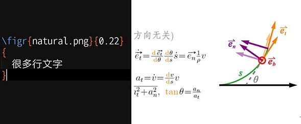

狸笔记（LeNote）是 LePtC 为整理学习笔记开发的 LaTeX 模版，主要特点有双语词条、自动高亮、图文混排、表文混排、紧凑版面、简化数理命令、强迫症友好型格式约定等… 【项目主页】【模版下载】。
本主页为狸笔记的内容分享项目，提供 LePtC 学习笔记的 pdf 文件下载。
笔记仅限学习交流使用，未经编者同意禁止用于商业用途。
欢迎童鞋检查笔记中的错误，提出改进意见。如果你有自己的 LeNote 笔记，欢迎与我分享～
同场论
{% include lenote.html en="H" ca="Phys" cn="粒子" pl="19" fin="10" %}（其它科目笔记多为纸质版，尚待积累）